i used the bunny girl i was already wearing as a base.. something about the experiment didn't feel right, so i shelved the outfit.
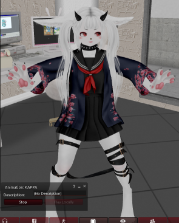
some time later, i took these pieces.. paw hands & feet alongside the white fur body skin.. and combined them with the Cherry Head which was sitting unused in my inventory.
i purchased it in the very beginning of my second life journey & had not found a satisfying use for it yet
i didn't have a texture made yet, so i just blanked the mesh to match the fur..
then i added more stuff i wasn't using.. fox ears & gakupo flexi hair
modding was still mysterious to me.. the default cherry eyes aren't bad, but they had no identity. marketplace had little to no options for alternatives
i did like T.T eyes the cherry head has by default though,
so i kept her on that.
when i finally placed the prim on the nose some insane feeling clicked.
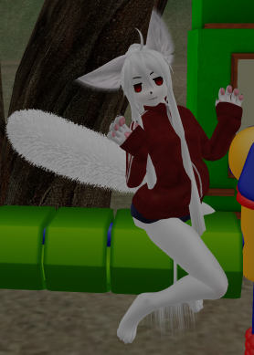
some time later i added some angel wings, a halo, and a swim suit.
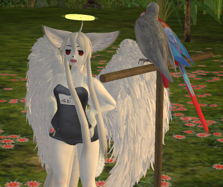 the decision to make her an angel was because i got these wings from free credits from a store called Blueberry
here is the first picture of wafa with her 1st 'default' outfit.. there are paw gloves as a part of it too, a la di gi charat.. i've mostly retired these from being part of her design since
trying the wings on her ended up really completing the character for me, and i could feel her forming into something serious. the halo is from a cosplay set
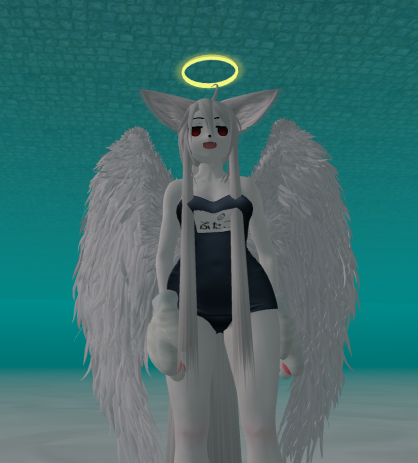
i called her Waterfairy because i saw her as coming from the water.. first name that came to mind, and i thought maybe a different name would come
but it didn't and Waterfairy was the name.
it was a handful to type though, so i started calling her wafa for short,
WAterFAiry ~ see? its funny because im called sofa. it works out.
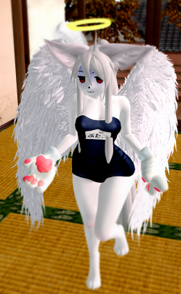
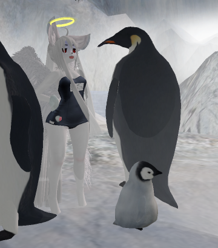
back then, my main avatar was a pink bunny girl named vampire bunny
icicle bunny, a blue bunny avatar, came along in 2020.. there were some other characters, but these two with wafa were the 'three main avatars' until 2021.. when wafa became the PRIMARY!
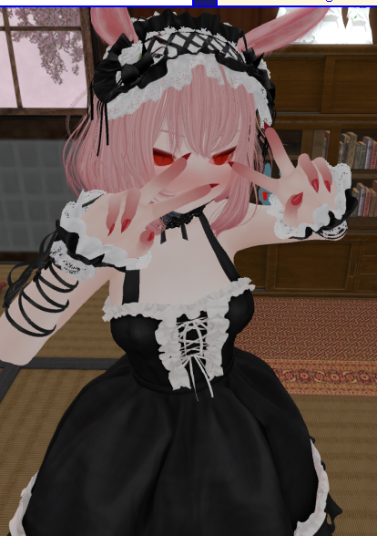
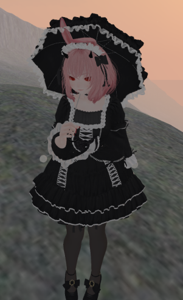
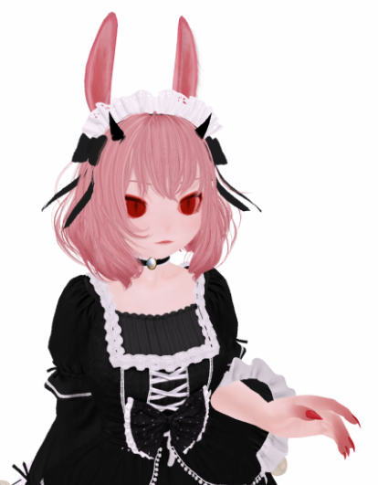
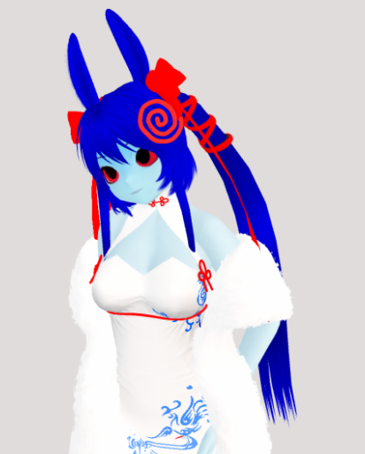
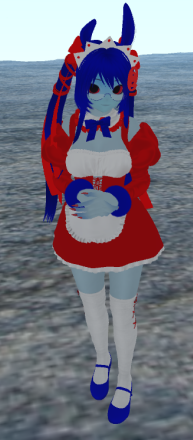
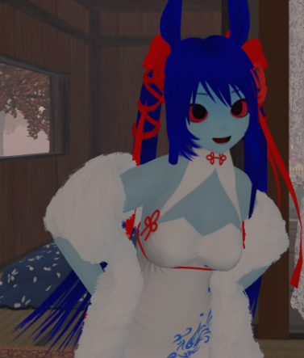
2019 and into 2020 cherry head wasn't that present, most anime avatars were using ASR or M3
i remember at this time ASR head was starting to pick up more with english speaking SL players. in japanese sims, pretty much everyone was wearing ASR, and this bled over. there was a tangible shift, a lot of mods were being made for it and i started making my own too.
anyway, the furry + anime head combination was 'rare' at this time, you saw more just one way or the other
there this feeling wearing wafa that i only felt if i was in a group.. she felt really cartoonish in comparison to most players
early on, a stranger told me "you're the first person i see to be mesh in a sea of prim", referring to the flexi hair
i still think flexi hair and flat 2d head look really good, but it seemed 'outdated' to many at the time.
it still kinda is that way in some places.
..basically i was exposed to some stifling standards, so it took some time to feel comfortable experimenting and doing what i wanted, using SL to its full capacity
luckily this didn't take long. i felt in my own lane by 2021.
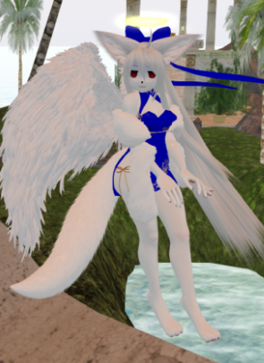
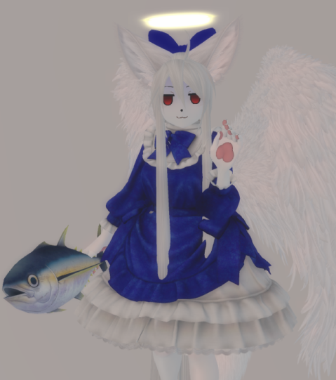
as i got deeper into SL, conejo started building up more of an identity.. it's own look & people. it became hard to NOT wear wafa
she felt so right to me somehow
i felt more in tune with myself, i wasn't trying to make an avatar that fit some picture of what avatars should be.. she has a 'living' quality that makes her fun to exist in, whereas some of my other avatars are maybe best only for taking photos.. her design also lent to a lot more versatility with outfits
shes simple, but it doesn't feel like anything is lacking.
and she is really fun to draw and paint too.
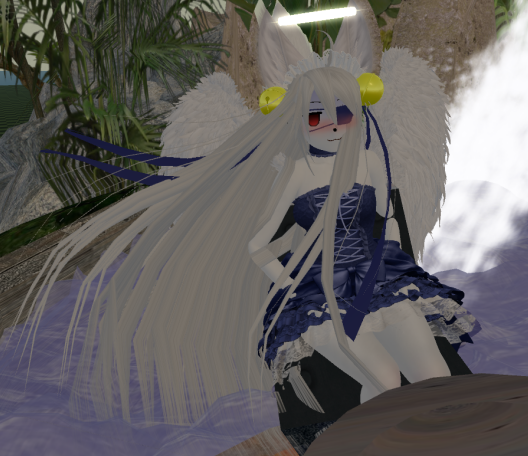
i eventually i started tinting modify enabled clothing, which removed a lot of dissonance and discomfort i experienced with all my outfits until then
i realized with things that are modify, i could just make them look more flat and conform to the colors i really love
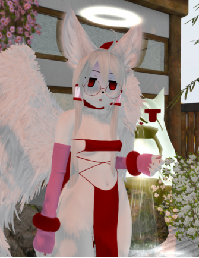
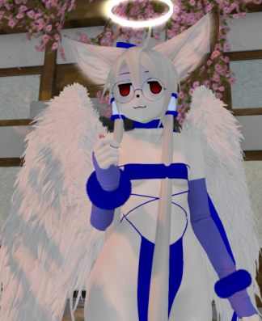
Maitreya Petite joins the avatar here too, with ocasional appearance of glasses.. these are just two things that made me feel more connected
i'm not sure when it was that i changed her tail for a flexi one, but im pretty sure it was this year also
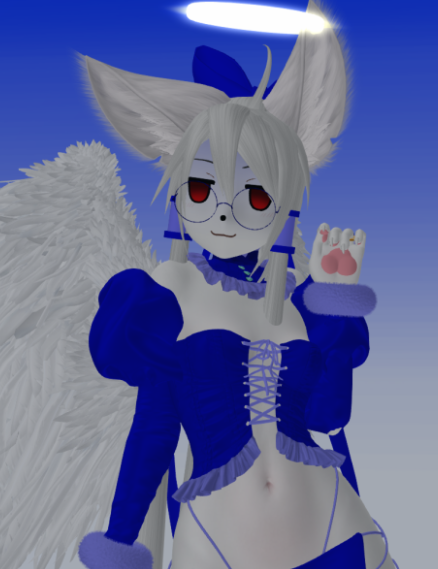
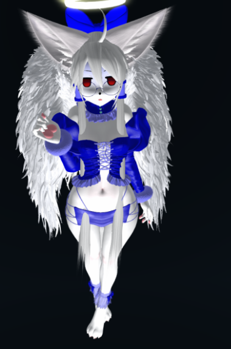
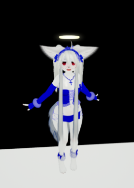
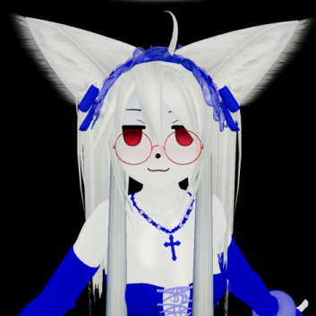
when i decided to move to a region conejo went through a lot of radical changes, and wafa's face changed too
i started to want to make wafa new eyes because it was becoming too easy for people to just switch on that default cherry expression over a blank head and look just like her. (though funny, not ideal)
it was nerve wracking to change because i was really attatched to the way she was
but somehow i did it..i'd like to make a more thorough mod for her sometime. i really like her face now
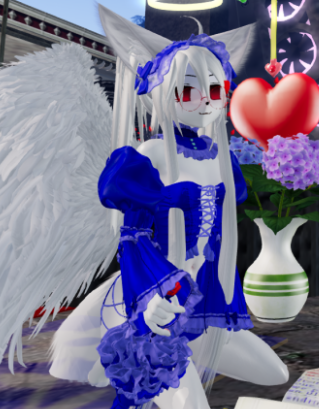
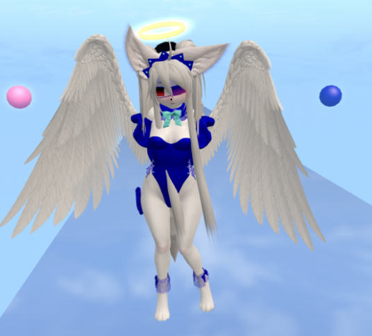
a lot of that energy now goes into building and maintaining conejo, i usually want to just relax on SL otherwise
i spend a lot of time doing VN work..
second life can feel like work depending on what you do, which isn't a bad thing if you've got the energy
avatar making comes from a similar place as drawing for me, which is to say it is usually draining energy that is more valuable for other uses
i still feel very fond of icicle bunny and vampire bunny, and i have some other characters that i'd like to update ..but if im ever in the mood, i end up making new outfits for wafa.
in a way, its a relief. i spent a long time feeling constantly uncomfortable in my avatar, not knowing which to be in the moment.. wafa feels like a no brainer, the connection is just right.
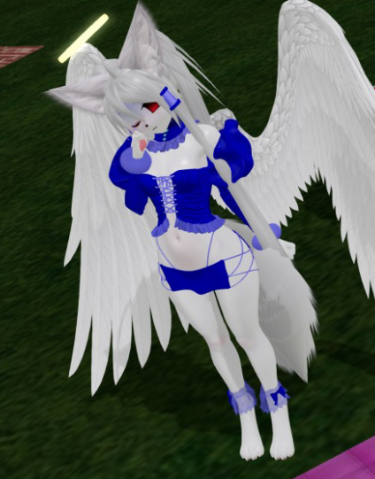
i see my spiritual self as a rabbit, not an arctic fox.. i like the seperation wafa provides, where she feels like a stage persona, an alter ego, and not 100% me, but also totally 100% me at the same time
..i've talked a lot about this feeling: 'passive roleplaying'
roleplay simply by taking control of an avatar.. a blurred line between you and that character, still some kind of line is present..
it becomes a type of blurry roleplaying.
you aren't consiously writing a story,
just by doing things in the avatar, their experiences happen and pile up into something
with a similar feeling to what comes out when you purposefully roleplay and write up a scenario
wafa has lived a lot through me, and i've lived a lot through her..and there is still more to learn